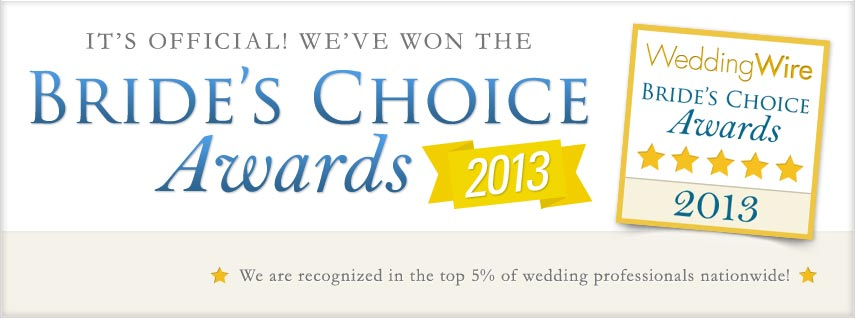

The New Dance Machine is owned and operated by Shaun Gehrke, an area DJ with over 10 years experience. He is known for his flawless mixing, and MC ability. With his club experience spinning records, as well as an appearance at The Detroit Electronic Music Festival, he has moved on to bring his mixing skills to a wider audience. Along with mixing beats, now transitioning all genres of music together to satisfy the masses, makes him the perfect wedding DJ. Being able to feel out the crowd and get them not only on the dance floor, but to keep them there, sets him apart from others.
Our mission is to make a memorable experience at every event we DJ. Providing a fun and comfortable atmosphere for all guests. From weddings to school functions, we pride ourselves on understanding the needs of each event, tailoring every performance to the venue and client.